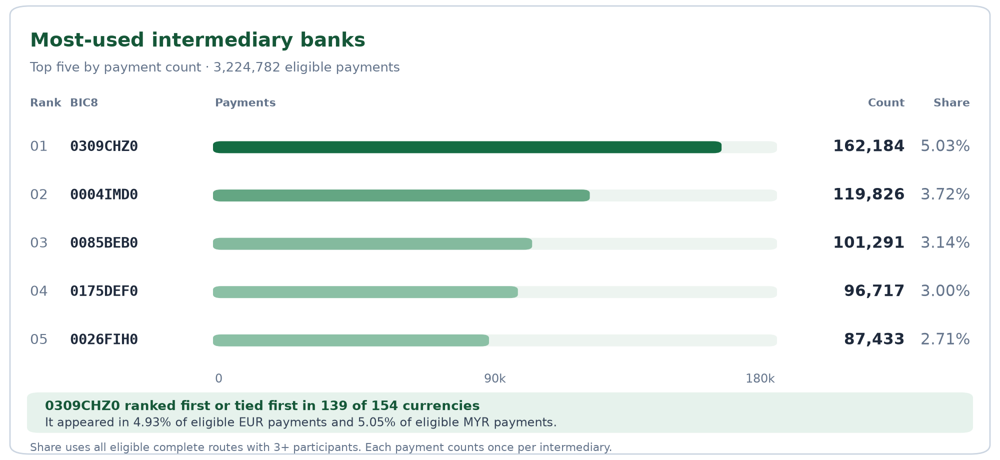
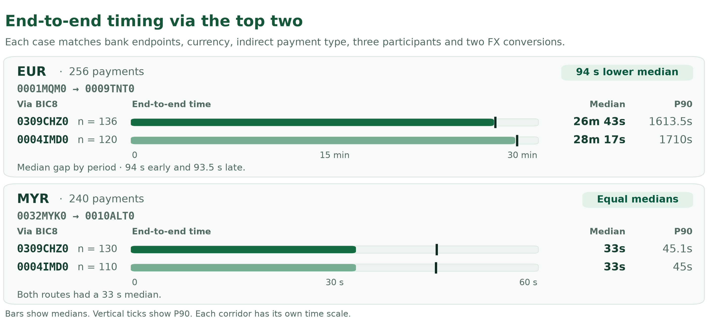

| Currency | Full BIC8 Path | Payments | Median (s) | P90 (s) |
|---|---|---|---|---|
| EUR | 0001MQM0 → 0309CHZ0 → 0009TNT0 | 136 | 1,603 | 1,613.5 |
| EUR | 0001MQM0 → 0004IMD0 → 0009TNT0 | 120 | 1,697 | 1,710.0 |
| MYR | 0032MYK0 → 0309CHZ0 → 0010ALT0 | 130 | 33 | 45.1 |
| MYR | 0032MYK0 → 0004IMD0 → 0010ALT0 | 110 | 33 | 45.0 |
SWIFT Datathon 2026 — Intermediary Banks and Payment Speed
Intermediary usage across the dataset and matched timing by bank corridor
ELIGIBLE PAYMENTS3,224,782
Complete routes with 3+ participants
MOST-USED INTERMEDIARY0309CHZ0
162,184 payments · 5.03% of eligible payments
MATCHED EUR CORRIDOR94 s lower median
Via 0309CHZ0 · 256 payments
MATCHED MYR CORRIDOR33 s on both routes
Equal medians · 240 payments

